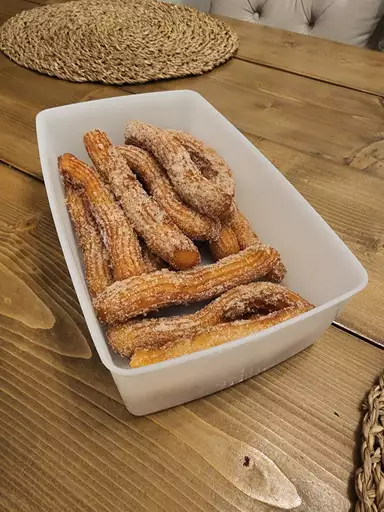

Churros

Churros(Mexican Fritters) are very common at fairs. In my boarder hometown, the line at this stand is always overwhelming. People wait hours in line just to get a taste of these churros. I have run across several recipes but this is the best one by far
Ingredients
- 1 Cup Water
- 2 1/2 tablespoons white sugar
- 1/2 teaspoon salt
- 2 tablespoons vegetable oil
- 1 cup of all-purpose flour
- 2 quarts oil for frying
- 1/2 cup white sugar, or to taste
- 1 teaspoon of ground cinnamon
Steps
- Combine water, 2 1/2 tablespoons sugar, salt, and 2 tablespoons of vegetable oil in a small saucepan and place over medium heat. Bring to a boil and remove from the heat. Stir in flour, stirring until mixture forms a ball
- Heat oil for frying in a deep fryer or deep pot to 375 degrees F
- Transfer the dough to a sturdy pastry bag fitted with a medium star tip. Carefully pipe a few 5-to-6 inch strips of dough into the hot oil; work in batched so you dont crowd the fryer.Cook until golden; use a spider or slotted spoon to transfer churros to paper towel to drain
- Combine 1/2 cup sugar and cinnamon. Roll drained churros in cinnamon and sugar mixture